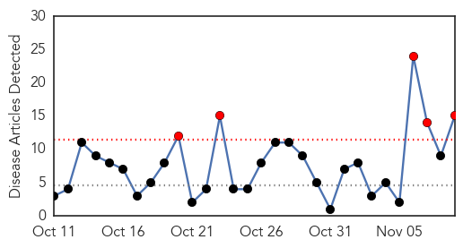
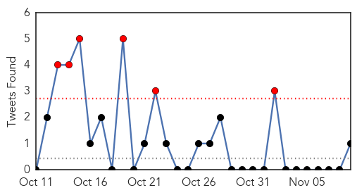

Cholera
30-Day Web Trend
5 alerts, 0 warnings

30-Day Twitter Trend
6 alerts, 0 warnings

Article Locations
Article Confidences

Top Articles:
- 0.998
- Oman Health: Ministry advises caution after cholera case detectedHealthcare
- 0.997
- Omani woman tests positive for cholera after visiting IraqHealthcare
- 0.997
- Iraq: amid fears cholera outbreak may worsen, UN agencies step up support to government-led response
- 0.992
- The Jewish Press UNICEF Warning Cholera Spreading from Iraq to Syria, Gulf States, to Become Regional Pandemic
- 0.990
- NRT English
- 0.970
- Over 230,000 vaccinated in Iraq anti-cholera campaign
- 0.961
- Cholera case diagnosed in Oman: health ministry
- 0.944
- Woman diagnosed with cholera in Oman
- 0.942
- Woman tests positive for cholera
- 0.939
- Imported cholera case in Oman
- 0.933
- Over 230,000 vaccinated in Iraq anti-cholera campaign
- 0.920
- Cholera Case Diagnosed in Oman — Naharnet
- 0.838
- Iraq completes round one of oral cholera vaccination campaign - Iraq
- 0.828
- Kingdom free of cholera
- 0.546
- "Cholera Is Coming"
Top Tweets:
- 0.508
- RT: Hey, please join us in calling for the UN to FaceJustice for cholera in Haiti !!!
Swine Flu
30-Day Web Trend
0 alerts, 0 warnings
30-Day Twitter Trend
0 alerts, 0 warnings

Article Locations

Article Confidences

Top Articles:
-
No articles found for Nov 09, 2015
Top Tweets:
- 0.686
- MoH denies swine flu infection at Qatif hospital https://t.co/tBS786HSZt https://t.co/sjrjT6e96O